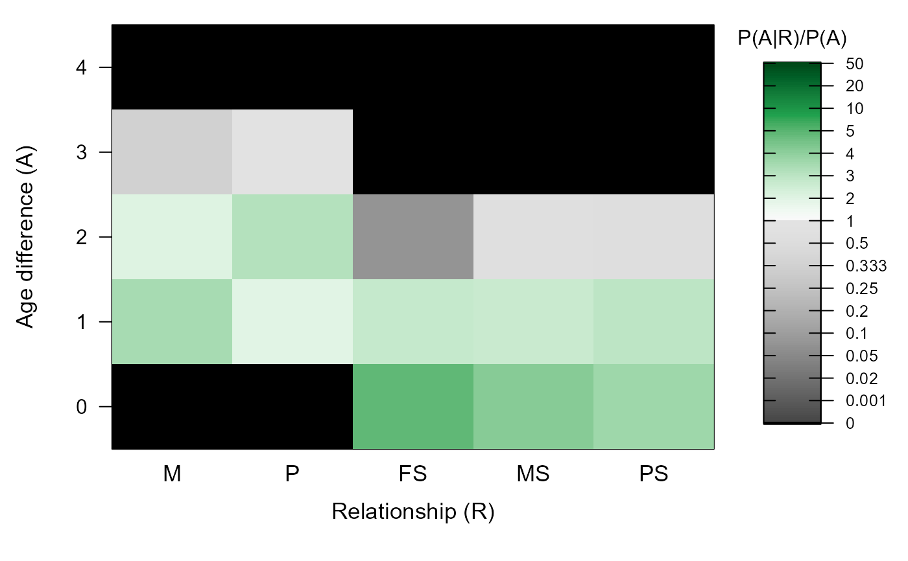

Age Priors
MakeAgePrior.RdEstimate probability ratios \(P(R|A) / P(R)\) for age differences A and five categories of parent-offspring and sibling relationships R.
MakeAgePrior( Pedigree = NULL, LifeHistData = NULL, MaxAgeParent = NULL, Discrete = NULL, Flatten = NULL, lambdaNW = -log(0.5)/100, Smooth = TRUE, Plot = TRUE, Return = "LR", quiet = FALSE )
Arguments
| Pedigree | dataframe with id - dam - sire in columns 1-3, and optional column with birth years. Other columns are ignored. |
|---|---|
| LifeHistData | dataframe with 3 or 5 columns: id - sex (not used) - birth year (- BY.min - BY.max), with unknown birth years coded as negative numbers or NA. Column names are ignored, so the column order is important. "Birth year" may be in any arbitrary discrete time unit relevant to the species (day, month, decade), as long as parents are never born in the same time unit as their offspring. It may include individuals not in the pedigree, and not all individuals in the pedigree need to be in LifeHistData. |
| MaxAgeParent | maximum age of a parent, a single number (max across dams and sires) or a vector of length two (dams, sires). If NULL, it will be estimated from the pedigree. See details below. |
| Discrete | discrete generations? By default (NULL), discrete
generations are assumed if all parent-offspring pairs have an age
difference of 1, and all siblings an age difference of 0, and there are at
least 20 pairs of each category (mother, father, maternal sibling, paternal
sibling). Otherwise, overlapping generations are presumed. When
|
| Flatten | logical. To deal with small sample sizes for some or all
relationships, calculate weighed average between the observed age
difference distribution among relatives and a flat (0/1) distribution. When
|
| lambdaNW | control weighing factors when |
| Smooth | smooth the tails of and any dips in the distribution? Sets dips
(<10% of average of neighbouring ages) to the average of the neighbouring
ages, sets the age after the end (oldest observed age) to LR(end)/2, and
assigns a small value (0.001) to the ages before the front (youngest
observed age) and after the new end. Peaks are not smoothed out, as these
are less likely to cause problems than dips, and are more likely to be
genuine characteristics of the species. Is set to |
| Plot | plot a heatmap of the results? |
| Return | return only a matrix with the likelihood-ratio \(P(A|R) /
P(A)\) ( |
| quiet | suppress messages. |
Value
A matrix with the probability ratio of the age difference between two individuals conditional on them being a certain type of relative (\(P(A|R)\)) versus being a random draw from the sample (\(P(A)\)). Assuming conditional independence, this equals the probability ratio of being a certain type of relative conditional on the age difference, versus being a random draw.
The matrix has one row per age difference (0 - nAgeClasses) and five columns, one for each relationship type, with abbreviations:
Mothers
Fathers
Full siblings
Maternal half-siblings
Paternal half-siblings
vector length 2
vector length 2, see details
matrix with the counts per age difference (rows) / relationship (columns) combination, plus a column 'X' with age differences across all pairs of individuals
Proportions, i.e. tblA.R divided by its colSums,
with full-sibling correction applied if necessary (see vignette).
Proportions PA.R standardised by global age
difference distribution (column 'X'); LR.RU.A prior to flattening
and smoothing
vector length 4, the weights used to flatten the distributions
the ageprior, flattend and/or smoothed
the names of the input Pedigree and
LifeHistData (or NULL), lambdaNW, and the 'effective'
settings (i.e. after any automatic update) of Discrete,
Smooth, and Flatten.
Details
\(\alpha_{A,R}\) is the ratio between the observed counts of pairs with age difference A and relationship R (\(N_{A,R}\)), and the expected counts if age and relationship were independent (\(N_{.,.}*p_A*p_R\)).
During pedigree reconstruction, \(\alpha_{A,R}\) are multiplied by the genetic-only \(P(R|G)\) to obtain a probability that the pair are relatives of type R conditional on both their age difference and their genotypes.
The age-difference prior is used for pairs of genotyped individuals, as well as for dummy individuals. This assumes that the propensity for a pair with a given age difference to both be sampled does not depend on their relationship, so that the ratio \(P(A|R) / P(A)\) does not differ between sampled and unsampled pairs.
For further details, see the vignette.
CAUTION
The small sample correction with Smooth and/or Flatten
prevents errors in one dataset, but may introduce errors in another; a
single solution that fits to the wide variety of life histories and
datasets is impossible. Please do inspect the matrix, e.g. with
PlotAgePrior, and adjust the input parameters and/or the output
matrix as necessary.
Single cohort
When all individuals in LifeHistData have the same birth year, it is
assumed that Discrete=TRUE and MaxAgeParent=1. Consequently,
it is assumed there are no avuncular pairs present in the sample; cousins
are considered as alternative. To enforce overlapping generations, and
thereby the consideration of full- and half- avuncular relationships, set
MaxAgeParent to some value greater than \(1\).
When no birth year information is given at all, a single cohort is assumed, and the same rules apply.
Other time units
"Birth year" may be in any arbitrary time unit relevant to the species (day, month, decade), as long as parents are always born before their putative offspring, and never in the same time unit (e.g. parent's BirthYear= 1 (or 2001) and offspring BirthYear=5 (or 2005)). Negative numbers and NA's are interpreted as unknown, and fractional numbers are not allowed.
MaxAgeParent
The maximum parental age for each sex equals the maximum of:
the maximum age of parents in
Pedigree,the input parameter
MaxAgeParent,the maximum range of birth years in
LifeHistData(including BY.min and BY.max). Only used if both of the previous areNA, or if there are fewer than 20 parents of either sex assigned.1, if
Discrete=TRUEor the previous three are allNA
If the age distribution of assigned parents does not capture the maximum
possible age of parents, it is advised to specify MaxAgeParent for
one or both sexes. Not doing so may hinder subsequent assignment of both
dummy parents and grandparents.
@section grandparents & avuncular
The agepriors for grand-parental and avuncular pairs is calculated from
these by sequoia, and included in its output as
`AgePriorExtra`.
See also
sequoia and its argument args.AP,
PlotAgePrior for visualisation. The age vignette gives
further details, mathematical justification, and some examples.
Examples
# without pedigree or lifehistdata: MakeAgePrior()#>#> M P FS MS PS #> 0 0 0 1 1 1 #> 1 1 1 1 1 1 #> 2 1 1 1 1 1 #> 3 1 1 1 1 1 #> 4 1 1 1 1 1 #> 5 1 1 1 1 1 #> 6 1 1 1 1 1 #> 7 1 1 1 1 1 #> 8 1 1 1 1 1 #> 9 1 1 1 1 1 #> 10 1 1 1 1 1 #> 11 1 1 1 1 1 #> 12 1 1 1 1 1 #> 13 1 1 1 1 1 #> 14 1 1 1 1 1 #> 15 1 1 1 1 1 #> 16 1 1 1 1 1 #> 17 1 1 1 1 1 #> 18 1 1 1 1 1 #> 19 1 1 1 1 1 #> 20 1 1 1 1 1 #> 21 1 1 1 1 1 #> 22 1 1 1 1 1 #> 23 1 1 1 1 1 #> 24 1 1 1 1 1 #> 25 1 1 1 1 1 #> 26 1 1 1 1 1 #> 27 1 1 1 1 1 #> 28 1 1 1 1 1 #> 29 1 1 1 1 1 #> 30 1 1 1 1 1 #> 31 1 1 1 1 1 #> 32 1 1 1 1 1 #> 33 1 1 1 1 1 #> 34 1 1 1 1 1 #> 35 1 1 1 1 1 #> 36 1 1 1 1 1 #> 37 1 1 1 1 1 #> 38 1 1 1 1 1 #> 39 1 1 1 1 1 #> 40 1 1 1 1 1 #> 41 1 1 1 1 1 #> 42 1 1 1 1 1 #> 43 1 1 1 1 1 #> 44 1 1 1 1 1 #> 45 1 1 1 1 1 #> 46 1 1 1 1 1 #> 47 1 1 1 1 1 #> 48 1 1 1 1 1 #> 49 1 1 1 1 1 #> 50 1 1 1 1 1 #> 51 1 1 1 1 1 #> 52 1 1 1 1 1 #> 53 1 1 1 1 1 #> 54 1 1 1 1 1 #> 55 1 1 1 1 1 #> 56 1 1 1 1 1 #> 57 1 1 1 1 1 #> 58 1 1 1 1 1 #> 59 1 1 1 1 1 #> 60 1 1 1 1 1 #> 61 1 1 1 1 1 #> 62 1 1 1 1 1 #> 63 1 1 1 1 1 #> 64 1 1 1 1 1 #> 65 1 1 1 1 1 #> 66 1 1 1 1 1 #> 67 1 1 1 1 1 #> 68 1 1 1 1 1 #> 69 1 1 1 1 1 #> 70 1 1 1 1 1 #> 71 1 1 1 1 1 #> 72 1 1 1 1 1 #> 73 1 1 1 1 1 #> 74 1 1 1 1 1 #> 75 1 1 1 1 1 #> 76 1 1 1 1 1 #> 77 1 1 1 1 1 #> 78 1 1 1 1 1 #> 79 1 1 1 1 1 #> 80 1 1 1 1 1 #> 81 1 1 1 1 1 #> 82 1 1 1 1 1 #> 83 1 1 1 1 1 #> 84 1 1 1 1 1 #> 85 1 1 1 1 1 #> 86 1 1 1 1 1 #> 87 1 1 1 1 1 #> 88 1 1 1 1 1 #> 89 1 1 1 1 1 #> 90 1 1 1 1 1 #> 91 1 1 1 1 1 #> 92 1 1 1 1 1 #> 93 1 1 1 1 1 #> 94 1 1 1 1 1 #> 95 1 1 1 1 1 #> 96 1 1 1 1 1 #> 97 1 1 1 1 1 #> 98 1 1 1 1 1 #> 99 1 1 0 0 0 #> 100 0 0 0 0 0#>#> M P FS MS PS #> 0 0 0 1 1 1 #> 1 1 1 1 1 1 #> 2 1 1 0 0 1 #> 3 0 1 0 0 0 #> 4 0 0 0 0 0MakeAgePrior(Discrete=TRUE)#>#> M P FS MS PS #> 0 0 0 1 1 1 #> 1 1 1 0 0 0 #> 2 0 0 0 0 0#>#> M P FS MS PS #> 0 0 0 1 1 1 #> 1 1 1 0 0 0 #> 2 0 0 0 0 0# overlapping generations: data(Ped_griffin, SeqOUT_griffin, package="sequoia") # without pedigree: MaxAgeParent = max age difference between any pair +1 MakeAgePrior(LifeHistData = SeqOUT_griffin$LifeHist)#>#> M P FS MS PS #> 0 0 0 1 1 1 #> 1 1 1 1 1 1 #> 2 1 1 1 1 1 #> 3 1 1 1 1 1 #> 4 1 1 1 1 1 #> 5 1 1 1 1 1 #> 6 1 1 1 1 1 #> 7 1 1 1 1 1 #> 8 1 1 1 1 1 #> 9 1 1 1 1 1 #> 10 1 1 0 0 0 #> 11 0 0 0 0 0# with pedigree: MakeAgePrior(Pedigree=Ped_griffin, LifeHistData=SeqOUT_griffin$LifeHist, Smooth=FALSE, Flatten=FALSE)#>#> M P FS MS PS #> 0 0.000 0.000 5.043 4.316 3.862 #> 1 3.476 1.967 2.798 2.636 2.971 #> 2 2.011 3.167 0.077 0.691 0.583 #> 3 0.340 0.959 0.000 0.000 0.000 #> 4 0.000 0.000 0.000 0.000 0.000# with small-sample correction: MakeAgePrior(Pedigree=Ped_griffin, LifeHistData=SeqOUT_griffin$LifeHist, Smooth=TRUE, Flatten=TRUE)#>#> M P FS MS PS #> 0 0.000 0.000 2.761 3.574 2.918 #> 1 2.698 1.655 1.783 2.270 2.321 #> 2 1.693 2.467 0.598 0.760 0.721 #> 3 0.548 0.972 0.299 0.380 0.360 #> 4 0.274 0.486 0.001 0.001 0.001 #> 5 0.001 0.001 0.000 0.000 0.000 #> 6 0.000 0.000 0.000 0.000 0.000